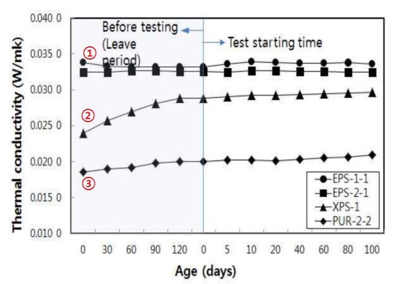

단열재의 단열성능은 초기성능을 기준으로 설계 시에만 반영되고 있으며, 건축물에 시공된 뒤 장시간 사용 후의 단열성능의 변화에 대한 관리는 전혀 이루어지지 못하고 있습니다.
일반적으로 건물의 수명은 50년 이상, 마감재 및 단열재의 개보수 또한 20~25년정도인데 말이죠.
이처럼 단열재가 장기간 사용되고 있다는 점에서 단열재의 '장기 경시변화(long-term Aging)'에 대한 부분은 매우 중요합니다.
단열재의 수명기간 동안 건축물에서 단열성능을 유지하기 위해서는 시간과 다양한 환경영향에 따른 단열재의 성능저하를 고려해야 하나, 현재 장기적인 단열재의 성능변화에 대한 연구는 거의 없는 편이라 많이 안타깝습니다.
단기 경시변화 연구는 여러 케이스가 있습니다.
다음은 표준환경조건(온도 23±2℃, 상대 습도 50±5%의 항온 항습실)에서 시험전 방치 120일간의 변화, 시험시작 100일간의 열전도율 변화를 살펴본 연구결과입니다.
(출처 / 임순현, 이건철 : "가속내구성 조건에 따른 건축용 유기계 단열재의 단열성능 변화" 한국건축시공학회지 v.16 no.6, 2016)

그림. 표준환경조건에서 열전도율의 변화
그림의 결과처럼 표준 환경조건에서 비드법 발포 폴리스티렌 단열재인 EPS 1종 1호 및 EPS 2종 1호는 경시변화가 발생하지 않는 것으로 나타났습니다. ①
반면, 압출법(아이소핑크) XPS-1은 초기 열전도율이 0.024W/(m·K)으로 KS M 3808 품질 규정에 적합하였으나 시험전 방치 기간 120일이 지나면서 열전도율이 0.029W/(m·K)으로 성능이 급격히 저하 되어 KS품질기준 값인 0.028W/(m·K)이하로 기준 값을 벗어났으며, 초기 열전도율 값과 약 120일 후의 열전도율 저하량은 약 21%의 높은 경시변화를 보였습니다. ②
그러나 그 이후100일간의 열전도율 값은 0.030W/(m·K)으로 4%의 경시변화를 나타내어 조기에 급격한 경시변화가 일어나고 120일 이후에는 경시변화가 완만해 짐을 알 수 있었습니다.
경질폴리우레탄 폼 단열재인 PUR-2-2는 초기 열전도율이 0.019W/(m·K)으로 다른 단열재에 비해 초기 단열성능이 매우 뛰어났습니다. 한편, 초기 방치 기간인 120일 후의 열전도율 값은 0.020W/(m·K)으로 5%의 경시변화를 나타내었고, 그 이후로도 약 5% 경시변화를 더 나타내었습니다. ③
EPS 단열재는 단기 경시변화 없어, 단열성능 가장 우수
XPS(아이소핑크)의 단기 경시변화가 제일 커
이상의 시험 결과를 고려해 볼 때 표준 환경 조건에서는 EPS 단열재가 단열성능 유지 능력이 가장 우수한 것으로 나타났습니다.
준불연 가등급 EPS 단열재 DK보드
건축용 / 드라이비트용 / 판넬용
문의 1855-2240